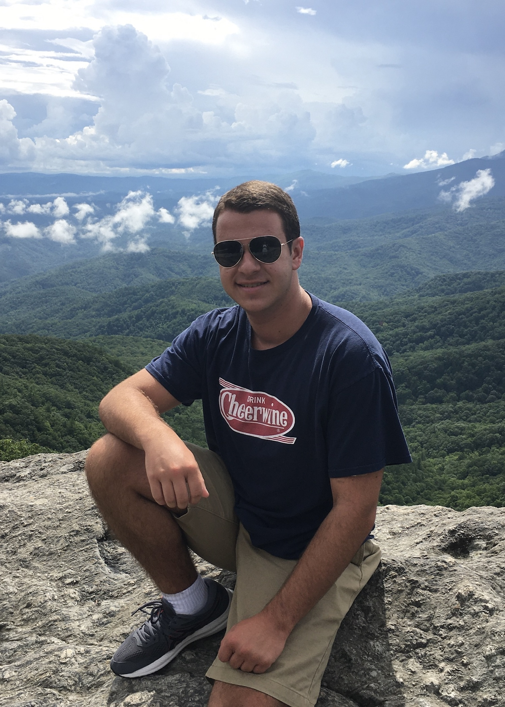

Luke Brady
My name is Luke Brady and I am currently a Junior pursuing a BS in Mechanical Engineering and a minor in Computer Programming
at North Carolina State University. My passion is making fiction a reality whether it be replicas from my favorite games or movies
or futuristic technologies that were once thought impossible. I believe in making the impossible possible whether it be through Computer
Programming or through physical machines and mechanisms.
I am currently looking for internship opportunities for the Summer of 2023 while I continue to pursue my degree
and graduate in May 2024. In the mean time I plan on continuing to learn new programming languages as well as strengthen the ones I currently
have knowledge in. Additional I plan to continue to make new replicas and branch more into robotics with future projects including a working
R2-D2 astromech droid. As I continue to work on and develop new projects you can find them added to this website.